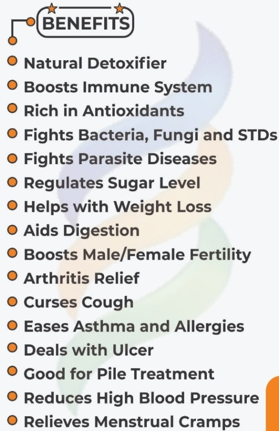

"Food or part of a food that provides medical or health benefits, including the prevention and/or treatment of a disease” (DeFelice, 1995).
Herbal Remedy to Restore, Enhance and Defend your entire body system against any ailment!!!
It is Fully Certified By NAFDAC & other Regulatory Bodies.
It's Non Toxic,
100% Organic,
And No Side Effect...

THINGS TO EXPECT WHEN YOU START TAKING THE JINJA HEALTH DRINK
✅1️⃣Colon Cleansing: A dirty colon is like that heap of smelling refuse dump on the street. It breeds all kinds of bacteria and diseases. That is why your feaces smells. Jinja Herbal will LAWMA your body,i.e manage your body waste😄😂.
Drink more water during the day.
✅2️⃣You will feel lighter and more energized. That means your Liver will start functioning better.
✅3️⃣You will sleep better and your appetite will improve.
✅4️⃣Your eyesight will become clearer and you will feel a general sense of well being. It's a signal that your body cells are jubilating and that healing has started.
NB:Some people may have reactions. It is expected. It is called healing Crisis or Haexemier syndrome. Pls don't stop at this point out of fear.